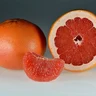

Correspondence Grimoire
Oedema
Type
Oils14

Grapefruit Essential OilOedema (also called edema or water retention) is the painless swelling that occurs when fluid accumulates in body tissues beneath the skin's surface. It most often appears in the legs, ankles, feet, and hands.
Therapeutic Application Methods
- Massage: Always stroke toward the heart to help move accumulated fluid out of swollen tissues. Use a 2–3% dilution in a carrier oil. Avoid deep pressure on heavily swollen areas.
- Bath: Disperse 5–8 drops total essential oil in a tablespoon of carrier oil or unscented bath gel, then add to warm (not hot) bathwater. Soak for 15–20 minutes.
Recommended Oils
The 14 oils linked below share diuretic, depurative, and lymphatic-stimulant action that helps reduce fluid retention.
 Angelica Root Essential Oil
Angelica Root Essential Oil Birch Bud Essential Oil
Birch Bud Essential Oil Carrot Seed Essential Oil
Carrot Seed Essential Oil Cypress Essential Oil
Cypress Essential Oil Sweet Fennel Essential Oil
Sweet Fennel Essential Oil Geranium Essential Oil
Geranium Essential Oil- Grapefruit Essential Oil
 Juniper Berry Essential Oil
Juniper Berry Essential Oil Lovage Root Essential Oil
Lovage Root Essential Oil- Mandarin Essential Oil
 Bitter Orange Essential Oil
Bitter Orange Essential Oil- Orange Essential Oil
 Rosemary Essential Oil
Rosemary Essential Oil- Spanish Sage Essential Oil
Magickal Notes
Oedema is the body holding what it should release. Pair the physical work with banishing or letting-go ritual, Cypress and Juniper Berry both carry purification and banishing associations and align well with the lymphatic-clearing intent.